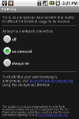

TorProxy and Shadow
Users give up a certain level of anonymity when they browse the web. Not only do things like cookies make them less anonymous, server logs also keep a record of which IP addresses connected to them, and ISPs, companies, and others may record the destination of outbound traffic. Unlike cookies, though, there is nothing a user can do to prevent their address from being captured by endpoints or intervening routers—except by using some kind of proxy. Using Tor, for example, allows users to proxy their request through an anonymizing network so that there is no direct connection between their address and the server they are contacting. Now, through the work of Connell Gauld, Android users can also browse through Tor using TorProxy and Shadow.
There are any number of reasons that someone might want to disguise their web requests: repressive governments, potential embarrassment, hiding illegal activities, and so forth. Tor routes each request that it gets through several, randomly-chosen nodes within its network. The request eventually emerges at an exit node—which, importantly, sees the traffic in the clear—where it is handed off to the destination server.

Essentially, the only information available is that the source node connected to a Tor node, and some time later a different Tor node connected to the destination. With enough monitoring, traffic analysis might be used to determine the correspondence between those two things, but it raises the bar by quite a bit. Cookies and user logins on destination sites can also potentially pierce a user's anonymity, but those are able to be controlled by users.
TorProxy and Shadow are two free software programs for Android mobile phones that give users access to the Tor network. Both can be installed from the Android Market application. As the name implies, TorProxy is the proxy agent that sits between applications that want to anonymously use the network and the network itself, routing the traffic through Tor. Shadow uses the Android browser classes to implement a browser, but routes its requests through TorProxy.
There are some questions (see the update) about the code that underlies TorProxy, so it may not, yet, be suitable for "operational" use. But, the code is free, and there have been successful efforts to get the C version of the Tor client running on Android, so it would seem likely that a secure version of TorProxy will come along.
Once installed, TorProxy can be configured to maintain a Tor connection at all times, or only on demand from applications that specifically request it, such as Shadow. Shadow has a bit of a different look from the standard Android browser, at least on startup, but it functions more or less the same. But, much like desktop Tor usage, it suffers from fairly serious delays.
When first connecting, TorProxy takes roughly 30 seconds to initiate a connection. An onion logo—Tor is sometimes known as "The Onion Router"—with a countdown appears in the Android status bar. Once the connection is established, one can then surf the web. It is something of a nostalgic experience, reminding one of those halcyon days of accessing the net via 9600bps (or worse) modems.
Unfortunately, any serious attempt to anonymize traffic is going to be somewhat slow. Each hop along the way is going to add some time to the process, but each will add a bit more unpredictability as well. For those that need the anonymity that Tor can provide, however, the wait is likely worth it—the wait in a gulag or prison will likely be much longer.
| Index entries for this article | |
|---|---|
| Security | Anonymity |
| Security | Internet/Tor |
Posted Oct 16, 2009 20:22 UTC (Fri)
by pspinler (subscriber, #2922)
[Link] (1 responses)
I might have avoided mentioning "Illegal Activities" as a reason to browse anonymously. Doing so only gives fuel to those who would restrict other, legal and ethically valid reasons for anonymous browsing.
-- Pat
Posted Oct 16, 2009 21:29 UTC (Fri)
by nix (subscriber, #2304)
[Link]
Posted Oct 22, 2009 8:19 UTC (Thu)
by renox (guest, #23785)
[Link]
Please do not oversell Tor: repressive governments can maintain a list of Tor proxies and discover who is using them.
So unless Tor is widely used (which AFAIK it isn't), using it can bring you *less* anonymity than not using it: a double edged sword!
Posted Nov 2, 2009 12:05 UTC (Mon)
by robbe (guest, #16131)
[Link]
I take exception to this confounding of latency and throughput. I get
Maybe Tor's slogan should be "much faster than postal mail, and no less
It takes some getting used to, but I've been doing all my home browsing
TorProxy and Shadow
TorProxy and Shadow
all laws are just: not all governments are trustworthy.
TorProxy and Shadow
Sure they may not know why you're using Tor, but they know you're using it, which may be enough to trigger unpleasant consequence..
TorProxy and Shadow
consistent 25 kB/s or better when downloading medium-size documents
through tor. That's more like multiple ISDN links, but with very large
(many seconds) round-trip-time. I imagine Internet connectivity on the
moon would be somewhat like that.
anonymous".
via tor for a few years. I work a lot with (manual) preloading, i.e. open
all probably interesting links in tabs and read them later (or not).